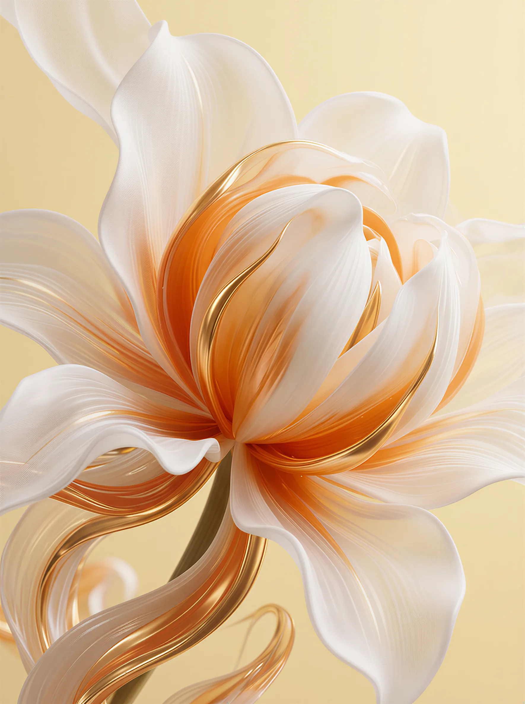
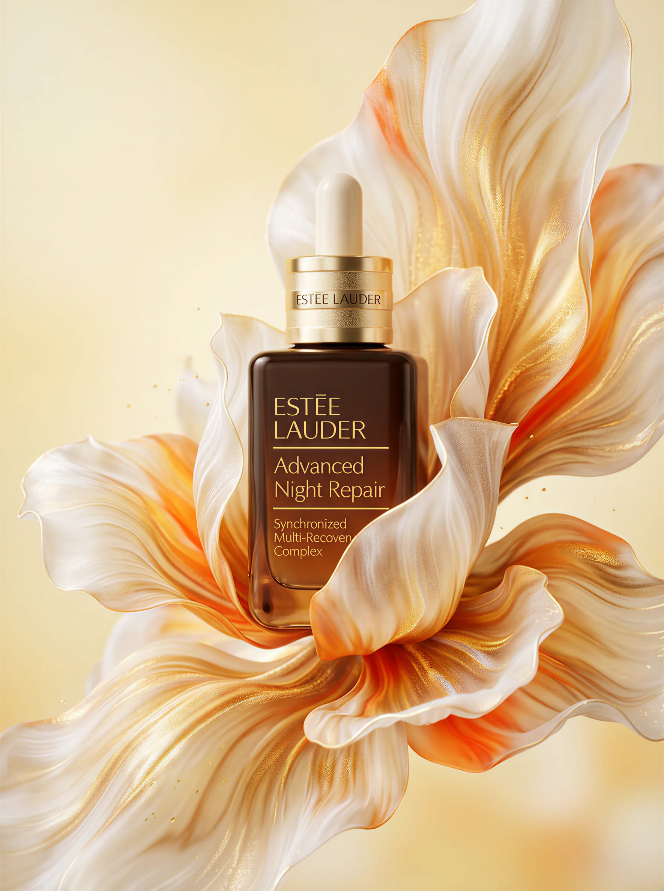
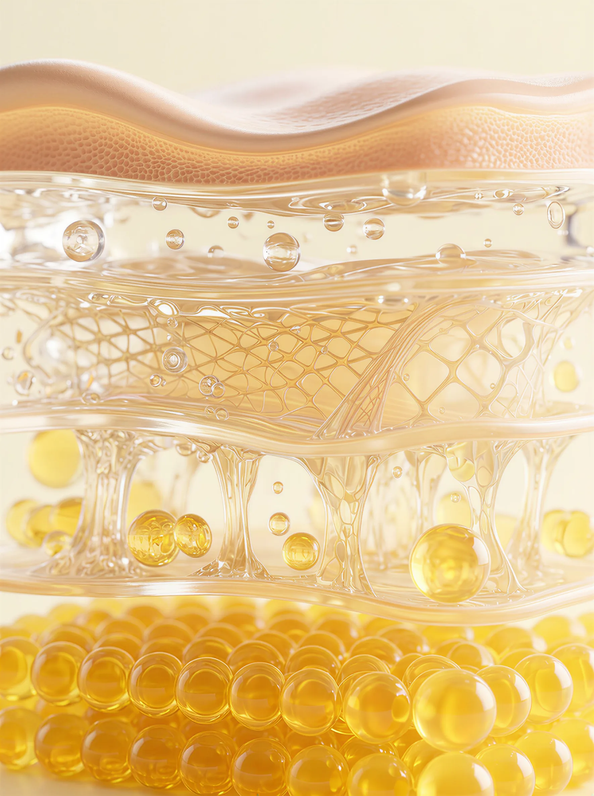

雅诗兰黛第七代小棕瓶的视觉策划，是一次关于夜间修护能量的彻底重塑。通过有机的 3D 花卉形态与微观细胞级的精准建模，我们将无形的护肤科技转化为更具生命力、更具沉浸感的感官体验。它专为诠释现代先锋抗老科技而设计，将严谨的护肤机理与极致的视觉艺术自然融合，重新定义了产品功效可视化的表达方式。灵感源于夜间细胞的新生与律动，我们将"律波肽"的修护能量具象化为流动的光影与绽放的姿态，使其不仅是功效的硬性传达，更带来情绪上的治愈连接。从宏观的生命绽放形态，到微观的皮肤屏障解构，整个画面仿佛拥有生命，能够感知修护的渴望，并自然融入这场关于年轻的视觉实验。
唤醒，新生的律动。
从一朵鎏金花卉的舒展开始，当第一滴精华坠入，科技的绝对理性介入了有机的感性释放。通过多景别的推演，我们完整呈现了小棕瓶从自然汲取到层层渗透的动态生命力。培育了一朵兼具丝绸般柔美与金属般坚韧的异界之花。这不仅是小棕瓶的绝佳展台，更是其"一夜焕亮"能量的外化表达。香槟金与珍珠白的交织，精准契合了品牌的奢华基调。
让复杂的科学原理在无形中优雅落地。
为了精准呈现层层深入的修护过程，我们剥离了表象，构建了这组严谨的皮下微观世界。从晶莹剔透的胶原网格到饱满的新生细胞，我们将原本晦涩的"根源修护"，翻译成了极具张力与结构美学的 3D 材质语言。


